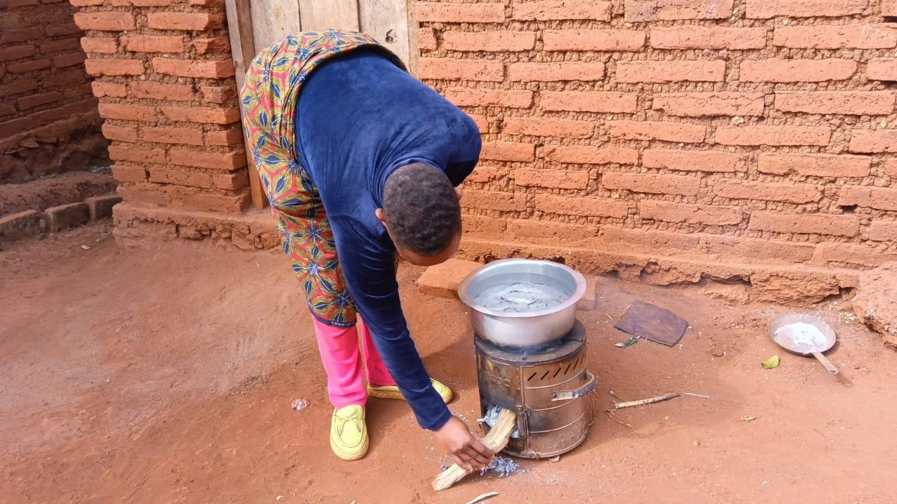
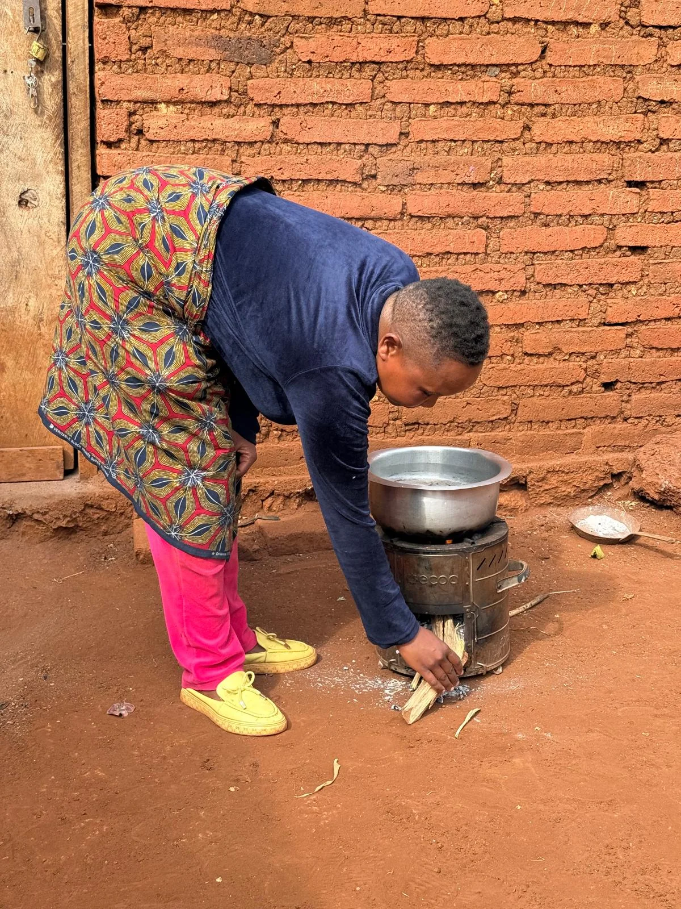

TANJA · SECTION PREVIEW
Two ways to tell the same story.
Provided photography, existing TANJA copy and the site’s current design language. Scroll to compare both compositions.
SustainabilityUendelevuサステナビリティ

We believe that living in harmony with nature and growing alongside our community are essential to a sustainable farm.Tunaamini kuwa kuishi kwa kupatana na mazingira na kustawi pamoja na jamii zinazotuzunguka ni muhimu kwa shamba endelevu.自然と調和し、地域とともに歩むことが、持続可能な農園にとって大切だと考えています。
Carbon CreditHati za Kaboniカーボンクレジット
Improved cookstoves for households around the farm use far less firewood: less smoke, less CO₂ and less time collecting wood. The project aims to obtain carbon credits.Majiko banifu kwa kaya zinazozunguka shamba yanatumia kuni kidogo sana: moshi mdogo, hewa ukaa (CO₂) kidogo na muda mfupi wa kutafuta kuni. Mradi unalenga kupata hati za kaboni.農園の周りの家庭に広める改良型かまどは、薪がずっと少なくて済みます。煙もCO₂も減り、薪集めの時間も短くなります。カーボンクレジットの取得も目指しています。
SustainabilityUendelevuサステナビリティ

We believe that living in harmony with nature and growing alongside our community are essential to a sustainable farm.Tunaamini kuwa kuishi kwa kupatana na mazingira na kustawi pamoja na jamii zinazotuzunguka ni muhimu kwa shamba endelevu.自然と調和し、地域とともに歩むことが、持続可能な農園にとって大切だと考えています。
Carbon CreditHati za Kaboniカーボンクレジット
Improved cookstoves for households around the farm use far less firewood: less smoke, less CO₂ and less time collecting wood. The project aims to obtain carbon credits.Majiko banifu kwa kaya zinazozunguka shamba yanatumia kuni kidogo sana: moshi mdogo, hewa ukaa (CO₂) kidogo na muda mfupi wa kutafuta kuni. Mradi unalenga kupata hati za kaboni.農園の周りの家庭に広める改良型かまどは、薪がずっと少なくて済みます。煙もCO₂も減り、薪集めの時間も短くなります。カーボンクレジットの取得も目指しています。
REVIEW NOTE
どちらの方向で進めますか
選択とコメントはこのブラウザ内に保存されます。送信はされません。最後のボタンで回答をコピーし、チャットに貼り付けてください。
現在のTANJAサイトを見る